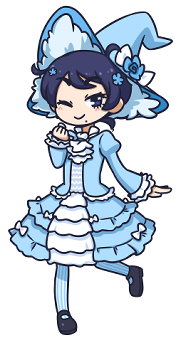

Welcome to my Blog~!
this template is special compared to my others... it's set up to look like a blog! here's an example link. (it goes to the game Periwinkle is from!)
remember to replace the navigation links with pages you want to show people! happy posting!!!
things to blog about:
- fandom stuff
- hobbies
- art! post your art!!!!
- interesting sites you find